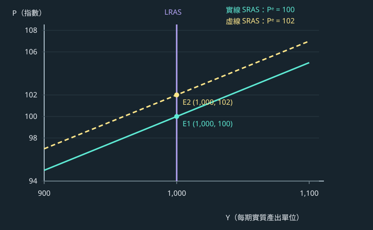

SRAS：物價預期與曲線位移
用一條方程式整理短期產出缺口，再分清沿曲線移動、預期改變與自然產出改變。
- 運用 SRAS 方程式求產出缺口
- 推導反函數及 SRAS 與 LRAS 交點
- 區分實際物價、預期物價與自然產出的變動
先備知識：價格誤認；基本代數（效率工資微分可搭配文字與圖形意義閱讀）。
01概念理解
課堂將價格僵固與價格誤認的共同結果整理為 Y = Ȳ + b(P − Pᵉ)，b > 0。當實際物價高於預期，產出高於自然產出；低於預期則相反。這是對短期供給反應的模型概括，不是會計恆等式，也不是宣稱每個經濟體的 b 都相同。
把 Pᵉ 想成事先設定的溫度基準，P 是實際溫度；偏差越大，調整反應越大。基準對應預期物價，反應大小對應產出缺口，敏感度對應 b。
譬喻的限制：經濟不是機械溫控器；這條關係需要前面僵固或誤認的機制支持，不能只靠比喻推導因果。
02公式與假設
使用教材第 37–39 頁的 P–Y 版本。固定 b > 0、Pᵉ 與 Ȳ 時討論同一條 SRAS；變動幅度限於線性近似有意義的範圍。第 14 頁採通膨率縱軸，不能把 π 直接代入本式的 P。
| 符號 | 意義與單位 |
|---|---|
| Y、Ȳ | 實質產出、自然產出；同一每期產出單位 |
| Y − Ȳ | 產出缺口的水準差；不是百分比缺口 |
| P、Pᵉ | 實際與預期物價；同一基期指數點 |
| b > 0 | 每一物價指數點落差對應的產出變化；單位為產出／指數點 |
03逐步推導
- 先減去 Ȳ：Y − Ȳ = b(P − Pᵉ)，把產出缺口與物價驚喜連起來。
- 兩邊除以 b： (Y − Ȳ)/b = P − Pᵉ，再加 Pᵉ 得反函數。
- 令 Y = Ȳ，得 P = Pᵉ；所以 SRAS 與 LRAS 交點的物價等於預期物價。
- 固定 Pᵉ、Ȳ、b，P 改變是沿同一條 SRAS 移動。
- 提高 Pᵉ，在每個固定 Y 下所需 P 等量提高：SRAS 上移；等價地，在固定 P 下產出降低，所以也可說左移。
- 提高 Ȳ 會使 LRAS 右移，也使同樣 P、Pᵉ 下的 SRAS 產出提高。這與單純預期物價改變不同。

04例題與練習
自編例題：Ȳ = 1,000、b = 20、Pᵉ = 100。求 P = 103 時的 Y 與產出缺口；再求 Y = 960 對應的 P。
查看解答與步驟
- 選用 SRAS，因為題目給的是實際與預期物價水準。
- P = 103：Y = 1,000 + 20 × (103 − 100) = 1,060；缺口為 +60 單位／期，百分比缺口為 60/1,000 = 6%。
- Y = 960：P = 100 + (960 − 1,000)/20 = 98。
- 驗算 1,000 + 20 × (98 − 100) = 960；P = 103 時反函數也回到 103。
自編練習：其餘條件同例題，P 維持 103，但 Pᵉ 從 100 上調為 102。新的 Y 為何？這是沿 SRAS 移動嗎？
查看解答與步驟
Y = 1,000 + 20 × (103 − 102) = 1,020，較先前少 40。預期物價改變，因此 SRAS 上移／左移，而非沿原曲線移動。驗算 ΔY = −bΔPᵉ = −20 × 2 = −40。新 SRAS 與 LRAS 在 (Y, P) = (1,000, 102) 相交。
05常見錯誤
b 就是 P–Y 圖上的斜率
方程式先把 Y 寫成 P 的函數；圖上縱軸是 P。
正確判斷 → 畫 P–Y 圖時斜率為 1/b。Pᵉ 上升只是沿原 SRAS 移動
原曲線以給定 Pᵉ 為條件。
正確判斷 → Pᵉ 改變須畫新曲線。把 P = 103 當作通膨率 103%
P 是水準，π 才是變動率。
正確判斷 → 先確認基期與單位，再代入。06考前重點
- P > Pᵉ 對應 Y > Ȳ；相等時位於自然產出。
- 固定預期下的 P 變動是沿曲線移動。
- 預期物價上升使 SRAS 上移／左移。
- 自然產出增加使 LRAS 右移。
07參考資料
課堂資料
05 The Aggregate Supply.pdf，投影片日期 2026/11/20，第 37–39（比較第 14 頁） 頁（依 PDF 頁序）。使用者提供。
自編教學整理
譬喻、補充代數步驟、圖形與練習依課堂機制自編，並非老師指定題目或考古題。本篇未引用外部資料；完整原始 PDF 不公開附載。